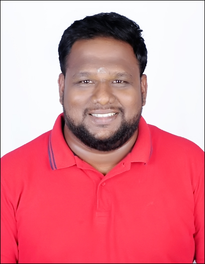

Healthcare Innovator • AI Strategist • Program Leader
Hi, I’m Salai Jeyaseelan Annamalai — a biomedical engineer, healthcare innovation strategist, and data science practitioner passionate about building purposeful technologies at the intersection of medicine, engineering, and artificial intelligence.
With a Master’s in Biomedical Engineering and an MBA in Data Analytics, my work has always been driven by a singular focus: translating complex problems into meaningful solutions that improve patient outcomes and healthcare systems. My career spans clinical research, medtech product development, machine learning applications, and startup incubation—often blending these disciplines to drive high-impact innovation.
I currently lead as the Incubation Program Manager at MSMF-TBI, India’s first hospital-based BioNEST incubator. Here, I work closely with clinicians, engineers, and entrepreneurs to bring novel healthcare technologies to life. I oversee the end-to-end journey of medtech startups—from idea validation and prototyping to clinical trials, regulatory pathways, and market readiness. This has involved managing multi-crore innovation programs, guiding strategic partnerships, and nurturing over 50+ startups that are reshaping the future of healthcare.
My portfolio of work is diverse yet deeply connected—ranging from AI-powered ICU monitoring systems and privacy-preserving federated learning frameworks for neuroimaging, to topology-based models for physiological signal analysis, and multiple first-of-their-kind biomedical devices for diagnostics and disease phenotyping. Many of these tools have emerged from my belief that healthcare solutions should not only be intelligent but also inclusive, scalable, and clinically relevant.
Beyond the lab and incubator, I actively contribute to national innovation ecosystems through healthcare hackathons, accelerator programs, and collaborative research initiatives. I enjoy mentoring early-stage teams, writing on emerging tech in healthcare, and envisioning systems that bridge the gap between science and society.
This website is more than a portfolio—it’s a space where I share the projects I’ve built, the ideas I’m exploring, and the journey I’m on. If you're curious about innovation in health, working on something exciting, or just want to connect—welcome. Let’s build what’s next, together.
Privacy-preserving, distributed learning on fMRI datasets to phenotype ADHD using open-source tools.
YOLOv8-based vision pipeline for extracting vitals and waveform from ICU monitor screenshots.
Built and ran India’s first hospital-based BioNEST accelerator, supporting 50+ medtech startups.
Mobile-first AI tool to capture and predict patient vitals using ICU monitor image snapshots.
Exploring the intersection of clinical empathy and predictive intelligence in healthcare AI tools.
Reflections on ecosystem gaps and how incubators can drive evidence-based innovation.
💻 GitHub